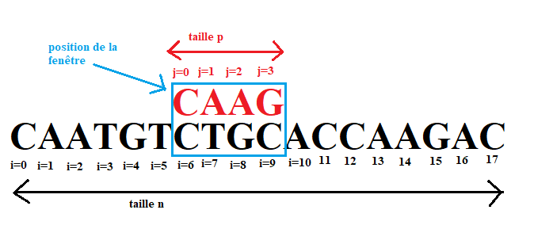
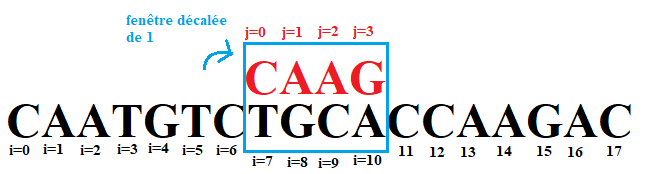
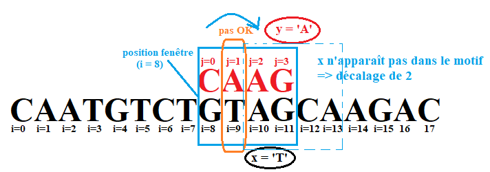
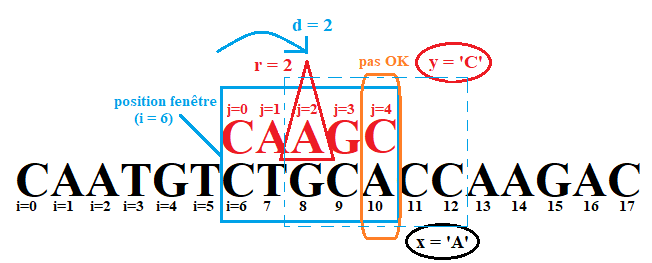

Recherche textuelle⚓︎


1. Recherche naïve⚓︎
Illustration de l'algorithme
Vous pouvez contrôler le déroulement de l'animation en la survolant avec la souris.
1.0 Cadre du probléme⚓︎
Dans toute la suite on cherche donc la première occurrence d’un motif de longueur \(p\) dans un texte de longueur \(n\).
À un moment donné de la recherche, on observe une fenêtre de taille p du texte complet, sur laquelle on aligne le motif, et on regarde s'il y a bien correspondance.

Dans ce schéma, la fenêtre est positionnée en i=6. Les caractère du motif sont indicés par j tandis que ceux du texte sont indicés par i.
Pour voir si on a trouvé un motif, on doit comparer les caractères du motif à ceux qui leur font face dans le texte.
 Pour chaque caractère du motif, on va comparer
Pour chaque caractère du motif, on va comparer motif[j] à texte[i:j] avec Les caractères du texte présents dans la fenêtre numérotés de 0 à p-1
 Si la fenêtre présente un défaut de correspondance entre les caractères du texte et ceux du motif, on déplace la fenêtre. Si le motif correspond parfaitement au texte dévoilé dans la fenêtre, on a trouvé une occurrence à la position
Si la fenêtre présente un défaut de correspondance entre les caractères du texte et ceux du motif, on déplace la fenêtre. Si le motif correspond parfaitement au texte dévoilé dans la fenêtre, on a trouvé une occurrence à la position i.
 Précondition : pour que la recherche puisse se faire, on doit avoir l'inégalité \(0 < len(motif) < len(texte)\), autrement exprimé ici
Précondition : pour que la recherche puisse se faire, on doit avoir l'inégalité \(0 < len(motif) < len(texte)\), autrement exprimé ici 0 < p < n
1.1 Premier algorithme⚓︎
On balaye la fenêtre de gauche à droite et on teste si chaque caractère correspond. Si ce n’est pas le cas, on décale la fenêtre de 1 vers la droite.
Ici : échec de la correspondance pour j = 1

Donc décalage de la fenêtre d’un cran vers la droite

Algorithme de recherche naïve 
| 🐍 Python | |
|---|---|
1 2 3 4 5 6 7 8 9 10 11 12 13 14 15 16 17 18 | |
1.2 Modification de l'algorithme⚓︎
Exercice 1
Re-écrire l'algorithme précédent en s'arrêtant dès qu'une occurrence de motif est trouvée dans texte.
La fonction renverra uniquement un booléen.
| 🐍 Python | |
|---|---|
1 2 3 4 5 6 7 8 9 10 11 12 13 14 15 16 | |
1.3 Application à la recherche d'un motif dans un roman⚓︎
Le Projet Gutenberg permet de télécharger légalement des ouvrages libres de droits dans différents formats.
Nous allons travailler avec le Tome 1 du roman Le rouge et le noir de Stendhal, à télécharger ici au format txt.
1.3.1 Récupération du texte dans une seule chaîne de caractères⚓︎
| 🐍 Python | |
|---|---|
1 2 | |
1.3.2 Vérification et mesure du temps de recherche⚓︎
Exercice 2
- Testez la validité de vos réponses en comparant avec les résultats donnés par la fonctionnalité
findproposée par
- Mesurez le temps d'exécution de votre algorithme à l'aide du module
time.
import time
top = time.time()
#Avec le find de python
g = stendhal.find('Mme de Rênal fut fidèle à sa promesse')
t_fin = time.time()
print(t_fin - top)
print(g)
top = time.time()
h = recherche_naive_bool(stendhal, 'Mme de Rênal fut fidèle à sa promesse')
t_fin = time.time()
print(t_fin - top)
print(h)
2. Algorithme de Boyer-Moore-Horspool⚓︎
Les performances de la recherche naïve laissant à désirer, de nombreux informaticiens ont proposé des solutions pour améliorer la recherche. Un des algorithmes les plus connus est l’algorithme de Knuth, Morris, Pratt, mais il ne figure pas au programme. Un autre algorithme, très efficace, est l’algorithme de Boyer et Moore, qui a été inventé en 1977.
Boyer et Moore travaillaient alors à l’université d’Austin au Texas en tant qu’informaticiens. Boyer qui était aussi un mathématicien est maintenant à la retraite. Nigel Horspool est né en Grande-Bretagne mais citoyen canadien. Il est professeur émérite d’informatique de l’université de Victoria, retraité depuis 2016. Il a conçu une variante simplifiée de l'algorithme de Boyer-Moore.
Illustration de l'algorithme
Vous pouvez contrôler le déroulement de l'animation en la survolant avec la souris.
2.1 Les deux idées du principe de Boyer-Moore-Horspool⚓︎
 La première idée consiste à comparer le motif avec la portion du texte qui apparaît dans la fenêtre de droite à gauche, et non pas de gauche à droite. Ainsi, on fait décroître
La première idée consiste à comparer le motif avec la portion du texte qui apparaît dans la fenêtre de droite à gauche, et non pas de gauche à droite. Ainsi, on fait décroître j à partir de p − 1 jusqu’à trouver que le caractère qui lui fait face dans le texte, c’est-à-dire x = texte[i + j], est différent du caractère y = motif[j] du motif.
La deuxième idée consiste à opérer sur la fenêtre un décalage qui varie en fonction de la paire de caractères qui ont révélé la non-correspondance, c’est-à-dire en fonction de (x; y). Pour cela, on effectue un pré-traitement du motif.
2.1.1 Calcul du décalage quand x n'apparaît pas dans le motif⚓︎
Quand x n'apparaît pas du tout dans le motif : on déplace la fenêtre pour qu'elle soit juste à droite du couple (x,y) qui a provoqué l'échec.


Le décalage dans ce cas pour un échec en position j du motif est donc de d=p+1.
2.1.2 Calcul du décalage quand x apparaît ailleurs dans le motif⚓︎
Dans le cas où x apparaît dans le motif, on déplace la fenêtre pour que x apparaisse juste au-dessus de la lettre du motif qui lui est égale.
Si \(x\) apparaît plusieurs fois dans le motif, alors on utilisera pour décaler la position la plus à droite, qu'on note \(r\).


On calcule alors d :
- si
d > 0, on décale ded - Sinon, on décale de
1comme dans la méthode naïve.
2.2 Implémentation⚓︎
2.2.1 calcul de la position la plus à droite et stockage dans un dictionnaire⚓︎
On va ici construire un dictionnaire aDroite dont :
- les clés sont les caractères (les lettres) du motif
- les valeurs sont la position la plus à droite du caractère.
#Exemple "à la main" pour le mot 'maman'
aDroite = dict()
aDroite['m']=0 #car c'est le premier qu'on a trouvé
aDroite['a']=1 #idem
aDroite['m']=2 #on a trouvé un 'm' plus à droite donc on change la valeur pour 'm'
aDroite['a']=3 #idem : on vient de trouver un 'a' plus à droite que le précédent
aDroite['n']=4 #On termine avec la dernière lettre du motif
#fini !
print("dico résultat : ", aDroite)
A faire
écrire la fonction construitADroite(motif) qui renvoie le dictionnaire ainsi construit pour le motif donné en paramètre.**
def construitADroite(motif):
'''calcule et renvoie un dictionnaire dont les clefs sont les caractères du motif
et le valeurs sont leur position la plus à droite dans le motif'''
aDroite = {}
p = len(motif)
for j in range(p-1):
aDroite[motif[j]]=j
return aDroite
assert(construitADroite('maman')=={'m': 2, 'a': 3})
2.2.2 Ecriture de la nouvelle fonction correspondance⚓︎
A faire : compléter le code de la fonction
correspondance(texte, motif)
Comme dans la partie 1.1, cette fonction renvoie, pour une fenêtre en position i, un couple formé :
- d'un booléen ok qui vaut True si on a trouvé une occurrence du motif, et False sinon
- d'un entier decalage qui est cette fois calculé selon la méthode de Horspool
Correspondance
def correspondance(texte, motif, i, aDroite):
''' On suppose que le dictionnaire pour le motif a déjà été calculé au niveau global
Cette fonction, pour une fenêtre en position i, teste si le motif correspond et sinon, indique quel décalage appliquer'''
p = len(motif)
for j in range(....., ....., ....): #on balaie cette fois la fenêtre de droite à gauche : de p-1 à 0 inclus en décroissant
x = texte[.....]
if x != motif[j]:
#on calcule le décalage
#on teste déjà si x est dans le motif quelque part
if ...............:
r = ....... #position la plus à droite
d = ........ #décalage
else:
#x n'est pas dans le motif : décalage maximal
d = .........
return (....., .....)
#si on est arrivé là, c'est qu'il y a eu correspondance parfaite : on a trouvé une occurrence. Décalage à 0
return (True, 0)
def correspondance(texte, motif, i, aDroite):
''' On suppose que le dictionnaire pour le motif a déjà été calculé au niveau global
Cette fonction, pour une fenêtre en position i, teste si le motif correspond et sinon, indique quel décalage appliquer'''
n = len(texte)
p = len(motif)
for j in range(p-1, -1, -1): #on balaie cette fois la fenêtre de droite à gauche : de p-1 à 0 inclus en décroissant
x = texte[i+j]
if x != motif[j]:
#on calcule le décalage
#on teste déjà si x est dans le motif quelque part
if x in aDroite.keys():
r = aDroite[x] #position la plus à droite
d = j - r #décalage
else:
#x n'est pas dans le motif : décalage maximal
d = j+1
return (False, d)
#si on est arrivé là, c'est qu'il y a eu correspondance parfaite : on a trouvé une occurrence. Décalage à 0
return (True, 0)
texte = 'CAATGTCTGCACCAAGAC'
motif = 'CAAG'
aDroite = construitADroite(motif)
assert(correspondance(texte, motif, 0, aDroite)==(False, 4))
assert(correspondance(texte, motif, 3, aDroite)==(False, 3))
assert(correspondance(texte, motif, 7, aDroite)==(False, 1))
assert(correspondance(texte, motif, 12, aDroite)==(True, 0))
2.2.3 Ecriture de la fonction de recherche finale⚓︎
Maintenant qu'on a la fonction correspondance, on peut passer à l'écriture de la fonction de recherche finale.
Cette fonction recherche(texte, motif) :
- calcule d'abord le dictionnaire des positions à droite pour le motif
- puis parcourt le texte de gauche à droite en appliquant à chaque étape le décalage calculé par la fonction correspondance.
- Elle renvoie l'indice de la première occurrence du motif cherché, ou à défaut -1 s'il ne s'y trouve pas.
C'est donc quasiment la même qu'en partie 2 : la seule différence est qu'elle calcule le dictionnaire !
Recherche Finale
écrire ci-dessous cette fonction finale de recherche
def recherche(texte, motif):
n = len(texte)
p = len(motif)
aDroite = construitADroite(motif)
i = 0
while i+p <=n:
ok, decalage = correspondance(texte, motif, i, aDroite)
if ok==True:
return i
else:
i = i + decalage
return -1
texte = 'CAATGTCTGCACCAAGAC'
motif = 'CAAG'
assert(recherche(texte, motif) == 12)
assert(recherche(texte, 'BB') == -1)
3. Bonus : comparaison des temps de calcul⚓︎
texte_pire = 'A'*10**6
motif_pire = 'A'*10*3+'B'
import time
top = time.time()
g = recherche(texte_pire, motif_pire)
t_fin = time.time()
print(t_fin - top)
print(g)
top = time.time()
h = recherche_naive(texte_pire, motif_pire)
t_fin = time.time()
print(t_fin - top)
print(h)